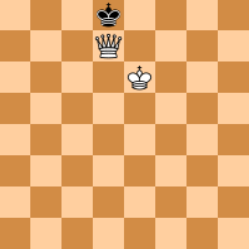
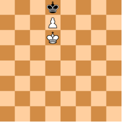

Mat

sytuacja w szachach, w której król jednej ze stron jest szachowany i nie ma żadnego dozwolonego ruchu, aby się przed szachem obronić lub od niego uciec. Mat kończy grę porażką gracza, którego król został zamatowany. Danie przeciwnikowi mata jest celem gry w szachy. Podczas profesjonalnych turniejów zazwyczaj nie dochodzi do faktycznego dania mata, bowiem przegrane partie najczęściej kończy poddanie się jednego z graczy.
Pat

Pat powstaje wtedy, gdy żadna bierka (nie tylko król) nie może wykonać prawidłowego ruchu. Im mniej bierek na szachownicy, tym większe jest więc prawdopodobieństwo doprowadzenia do sytuacji patowej. Pat odgrywa bardzo dużą rolę w grze końcowej. Jedyną obroną samotnego króla przeciwko królowi z pionem jest niedopuszczenie do promocji piona przez zajęcie w odpowiedniej chwili jego pola przemiany. Na zamieszczonym poniżej diagramie ruch przypada na czarne, które nie mogą wykonać dozwolonego posunięcia. Pozycja jest patowa, więc partia kończy się remisem.
Remis
Jak już wcześniej wspomniałem remis następuje w przypadku patu. Jednakże remis w szachach można osiągnąć na parę innych sposobów. Mianowicie remisu możemy dokonać wspólnie z przeciwnikiem bądż poprzez trzykrotne powtórzenie tej samej pozycji.